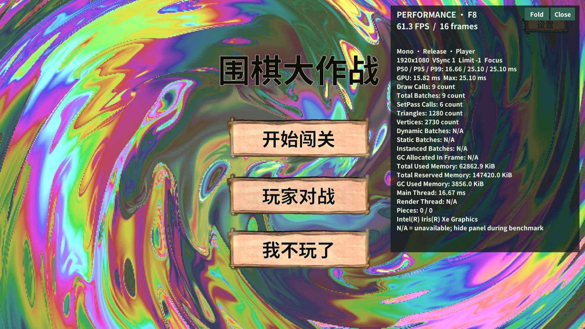
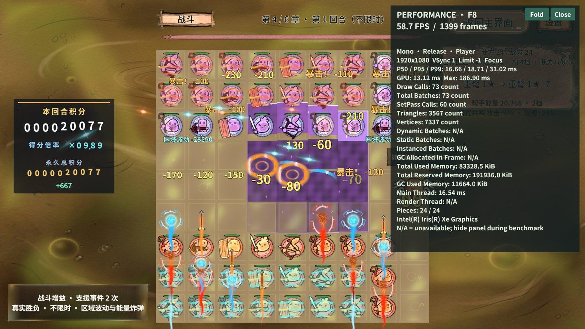
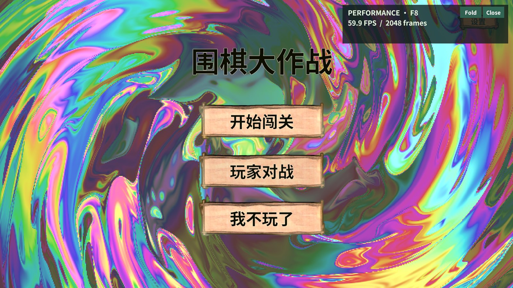
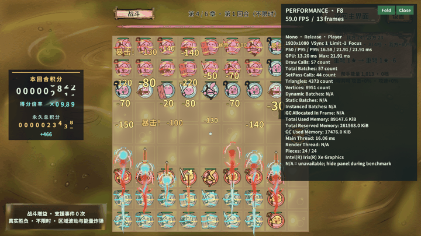

结论
框架通用构建、Player启动/发现/GM/性能采样/取消/退出与RevGame性能面板已实现；Windows独立Mono非开发包完成真实AB端到端回归。IL2CPP构建已实际尝试，但被Unity 2022.3.15f1c1无法识别本机VS2026工具链阻塞，未交付成功IL2CPP包。
本轮功能链路通过不等于80～90FPS达标。本轮保留VSync=1、限帧值-1；未做性能优化前后对照、十分钟热态、Android或开发包详细计数验收。
环境与唯一身份
| 项目 | 实际值 |
|---|---|
| 设备 | 12th Gen Intel(R) Core(TM) i7-12700H / Intel(R) Iris(R) Xe Graphics |
| 构建 | Mono / Release（非Development） / REV_AUTOMATION / WindowsPlayer |
| 图形 | Direct3D11 / 1920×1080 / PC真实AB / VSync=1 |
| Unity | 2022.3.15f1c1 |
| buildId | 3e3c42ccecb040d5ada7dd959fa9f7ec |
| runId | c3bd451baa04453c90f173f266e1b47d |
| 代码基线 | RevGame bdf4ee7 + 本次工作区改动；框架d97eb1d运行时代码，后续CLI心跳修复单独回归 |
| 输入 | 第4章48棋压力夹具，周期补血维持负载；正常玩法规则与伤害入口，非正常难度胜率测试 |
| 测量 | 预热2秒，采样时隐藏面板，截图与GIF在窗口外；前台帧数完整，unfocusedFrames=0 |
验收与断言
| 检查 | 实际结果 | 口径 |
|---|---|---|
| Python CLI / MCP | 32 / 22 项通过 | 包括真实stdio握手、调用/取消、路径和会话保护 |
| 独立包计划 | 15步骤＋5清理步骤通过 | 真实业务准备、采样、日志、面板和资源回收 |
| 动态证据计划 | 12张连拍＋回首页清理通过 | 不能当作逐帧Profiler录像 |
| GM | Player发现84条；实际调用RevGame/流程状态成功 | 未逐条执行全部84条GM |
| 业务负载 | 采样前后查询均48棋，攻击计数18→718 | 计数差包含预热与查询间隔，不冒充精确10秒攻击数 |
| 面板交互 | 真实EventSystem折叠/关闭成功 | 截图证明Fold后布局；state证明visible=false |
| 失败边界 | seconds=0拒绝；取消保留runId且success=false | 取消发生在预热期，不能报告采样成功 |
| 清理 | Home、logic=0、pieceRefs=0、Recorder释放、进程退出 | 保留原Unity编辑器；运行错误最终0 |
固定窗口实测
| 统计 | 结果 | 单位/含义 |
|---|---|---|
| 实际时长 | 10.000506 | 秒 |
| 样本 | 598 | 帧 |
| 平均FPS | 59.797 | 帧数/墙钟秒 |
| P50 / P95 / P99 | 16.647 / 17.957 / 24.151 | ms |
| 最慢帧 | 31.020 | ms |
| GPU有效样本 | 595 | 新时间戳且正有效帧时 |
| GPU P50 / P95 | 12.860 / 13.819 | ms；不能与CPU相加 |
| 超过16.67ms | 47.32% | 不能据平均FPS宣称每帧稳定60 |
运行时计数器
| 计数器 | 窗口平均 | 单位 |
|---|---|---|
| Draw Calls Count | 67.013 | count |
| Total Batches Count | 67.013 | count |
| SetPass Calls Count | 53.856 | count |
| Triangles Count | 3538.156 | count |
| Vertices Count | 7318.640 | count |
| Dynamic Batches Count | N/A | count |
| Static Batches Count | N/A | count |
| Instanced Batches Count | N/A | count |
| GC Allocated In Frame | N/A | bytes |
| Total Used Memory | 84123105.866 | bytes |
| Total Reserved Memory | 196542464.000 | bytes |
| GC Used Memory | 10935772.040 | bytes |
| Main Thread | 16.719 | ms |
| Render Thread | N/A | ms |
Release中详细合批、GC分配和渲染线程计数可能缺失，N/A不是0；面板显示Total Batches时兼容引擎原生Batches Count名称。已用/保留内存是Unity口径，不是整个进程内存。
失败记录与修复
| 顺序 | 首次原因 | 处理与边界 |
|---|---|---|
| 1 | GUI/Text Shader为Editor HideAndDontSave对象，Player写入内置资源失败 | 移除错误Always Included引用；框架仅识别实际Font资产生成材质，普通Shader门禁保留 |
| 2 | Unity将VS2026识别为UNKNOWN，IL2CPP找不到兼容工具链 | 保留失败BuildReport；等待兼容Build Tools，未冒充IL2CPP通过 |
| 3 | ab.build构建但copyToStreamingAssets=false，Player缺少ui_diagnostics | 改用项目game.background.build完整校验并发布60包后重新构建 |
| 4 | 运行时夹具漏了推进章节剧情，等待就绪超时 | 通过正式AdvanceStory接回原Editor测试行为，保留原时限和断言 |
| 5 | 面板底部裁切、总批次标记名不匹配 | 扩展面板高度并支持Batches Count，真实截图复验 |
| 6 | 长AB构建结束心跳未刷新，连续计划下一步判离线 | RevClient有界等待新心跳，不重发已完成构建；新增回归通过 |
Player仍有项目既有Sprite Tiling/Full Rect警告；本次运行Error/Exception为0，没有把警告称为完全无日志问题。
保护与交付
每次框架增量同步均逐项比较RevResPath、RevSoundPath、ResMap及meta的SHA256，没有覆盖项目生成物。之后由本项目资源生成器只新增PerformanceMonitorPanel映射及UI_Panel_Diagnostics常量。安装包、原始JSON/日志与凭据只在忽略目录；未生成ZIP、Profiler录制或内存快照。
F8打开/关闭；启动参数-revPerformance自动打开，-revTestSession在业务初始化前隔离存档。正常发布不启用REV_AUTOMATION，不注册测试接口。
真实截图与动图




复现入口与未验证项
使用说明：独立Player性能监测与AI测试。
本机证据：D:\AAAAAAA王者荣耀项目组工作日志\RevGame\.codex\work\player-2026-10-31；可运行的验证包在build-mono-03/RevGame.exe。机器证据与安装包不随Git提交。
未验证：IL2CPP成功包、Development详细计数、Android、十分钟热态、全部GM、优化前后同条件收益和80～90FPS预算。安装VS2022 Build Tools的授权尚未收到，本轮没有自行安装。